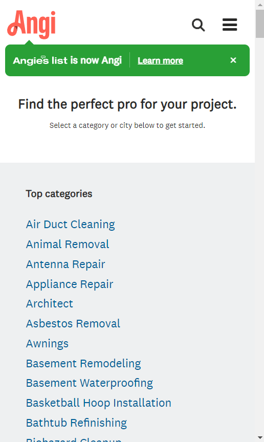

Hick's Law
Web address: https://www.angi.com/
In web design, Hick's Law teaches that simplicity and clarity are important. The law also tells us that in some rear instances, it would be acceptable to have a long list of items in a menu. In these instances, there would be two criteria to be satisfied. The first criterium is that the list should be ordered (eg. alphabetical order), and the second is that the user would need to be familiar with the menu items (eg. a list of states in a country). The Angi site shows a list of items a user would be familiar with.
Fitts's Law
Web address: https://www.cloudflare.com/
Fitts Law tells us that the time required to reach a target depends on it's size and distance from the user. With this in mind, touch targets should be large enough for users to accurately select them. These targets should also have ample space between them (especially on mobile devices). The "Learn more" button on the Cloudflare site is made in such a way that it's easier to access.
Visual Hierarchy
Web address: https://www.istockphoto.com/
Visual hierarchy is a design principle that refers to the arrangement or presentation of elements in a way that implies their order of importance. It helps guide the user's eye through a piece of content and directs their attention to the most important infomation. On the iStock page, the user is led to the large text in the middle, then to the button at the bottom.